Pilotprojekt
På dette tema fik vi grundlæggende indførsel i videoproduktion og billedredigering, samt generel inholdsproduktion. De redskaber vi fik tilammet os her, samt fra de foregående temaer, skulle vi bruge til at redesigne en virksomheds hjemmeside som et gruppeprojekt.Som første led i projektet, startede vi på vores pilotprojekt, som gik ud på at producere en video af en person, der er engageret i sit virke (denne video kan ses til højre).

Redesign af website
Som start på vores redesign, påbegyndte vi en research for at bestemme, hvilken virksomhed, vi ville indgå et samarbejde med. Da dette var på plads startede selve produktionen, hvori vi blev introduceret til SCRUM som et værktøj til projektstyring. I den forbindelse lavede vi et trello board, for at kunne uddelegere opgaverne og for at kunne følge med i hinandens fremgang. SCRUM hjalp os til at være omstillingsparate og til at skabe et godt workflow. Til produktionen af indholdet lærte vi om 5-skuds reglen, videointerview og fotostile. Vi brugte 5-skuds-reglen i vores baggrundsvideo på sitet, da den kan fortælle rigtig meget med få klip. Desuden valgte vi, at at vi gerne ville nedtone vores billeder i redigeringsfasen, da det passede til det blide udtryk, vi prøvede at indkapsle på siden ved hjælp af meget whitespace og neutrale farver. I processen lavede vi designdokumentation i form af moodboard, wireframe, layoutdiagram og funktionalitets-liste. Slutteligt lavede vi endnu en bert-test, som vi også havde gjort i starten, samt en eksperttest og 5-sek test for at undersøge, om ændringerne vi havde lavet havde en effekt.
Moodboard

Styletile

Wireframe for redesign
 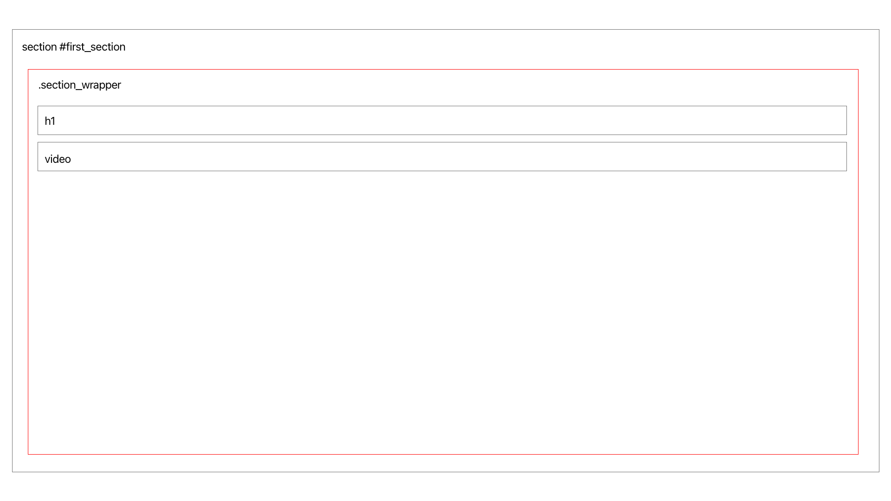
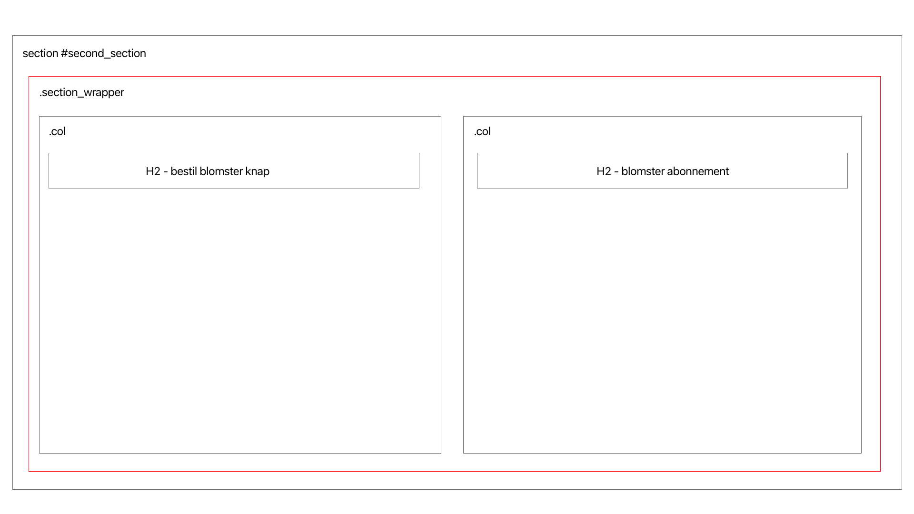
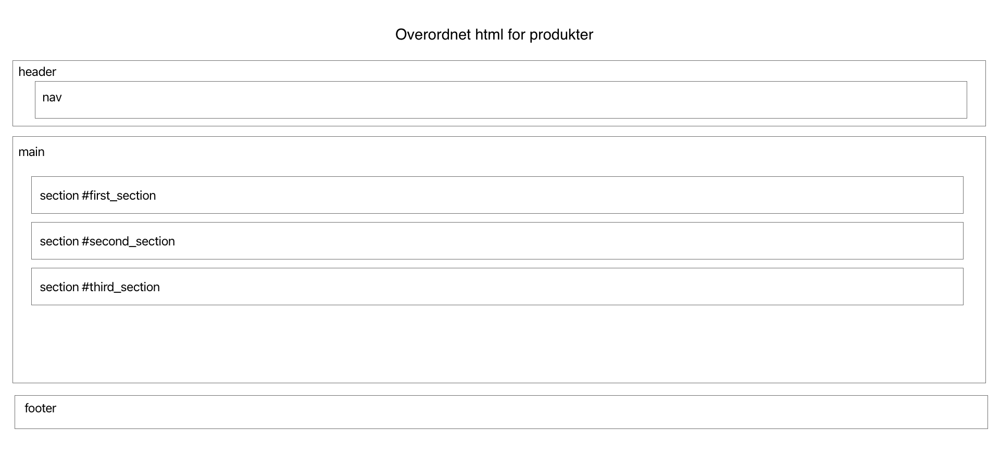
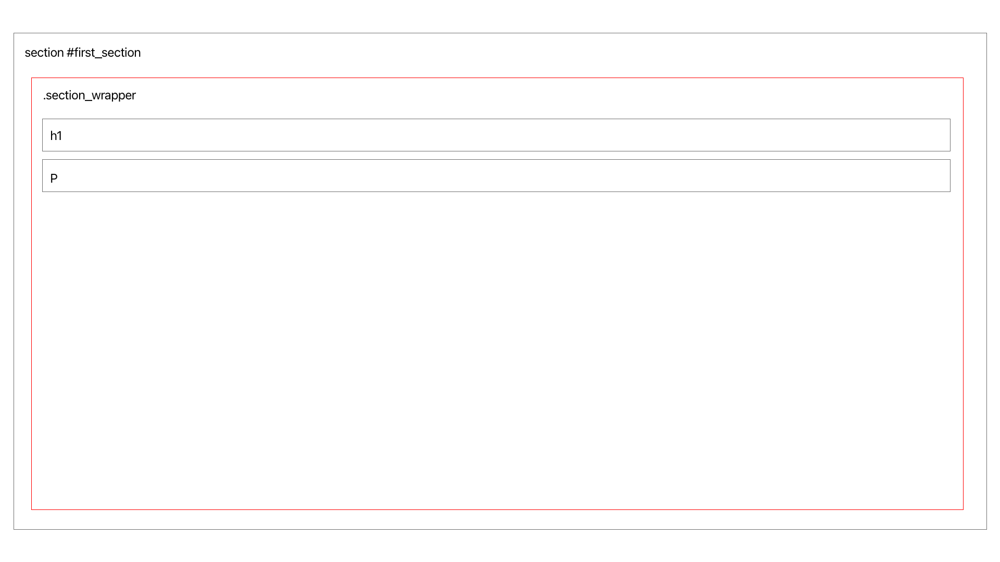
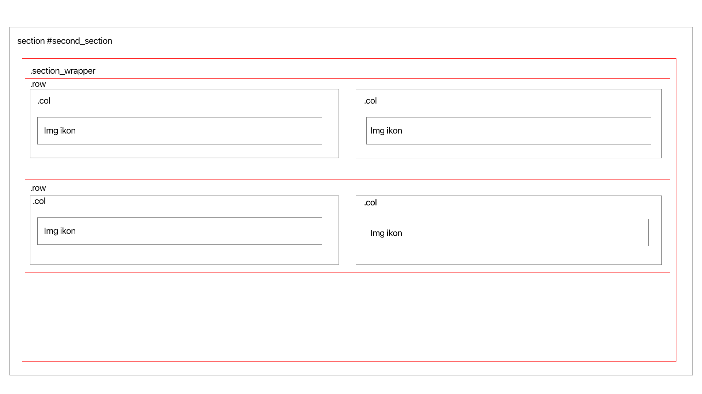
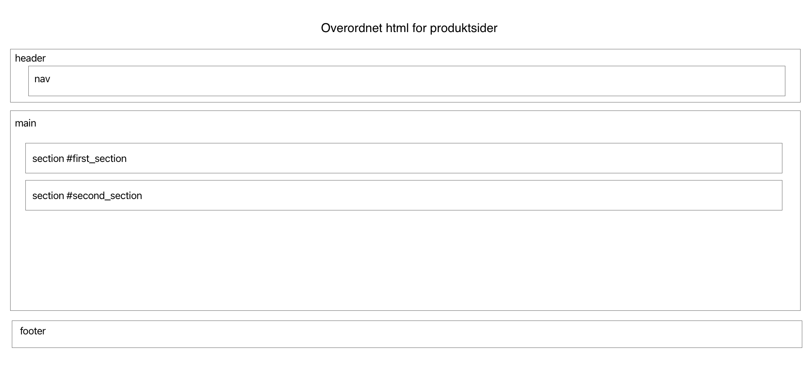
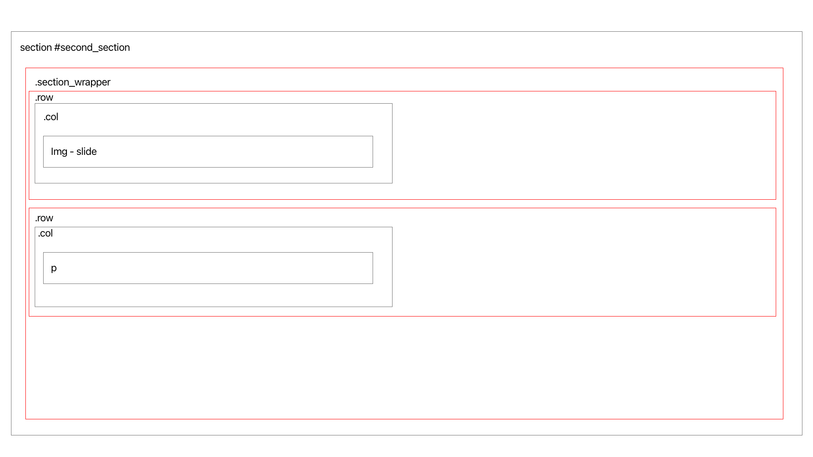
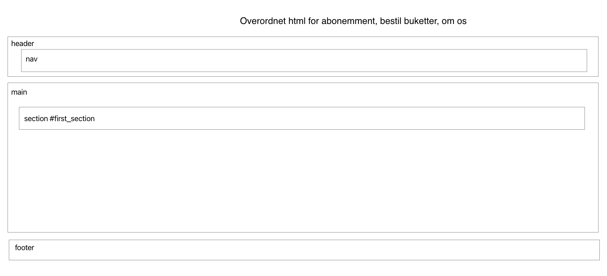
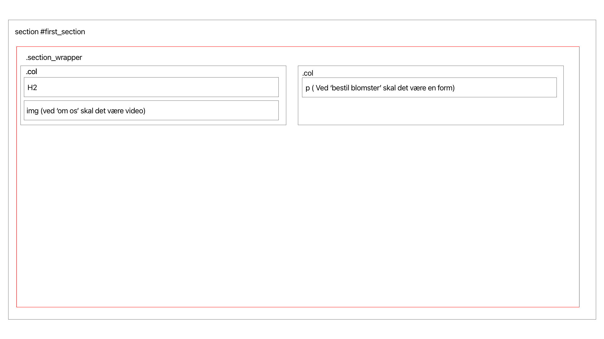
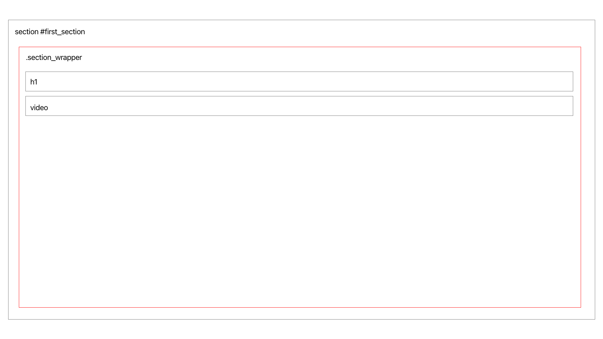
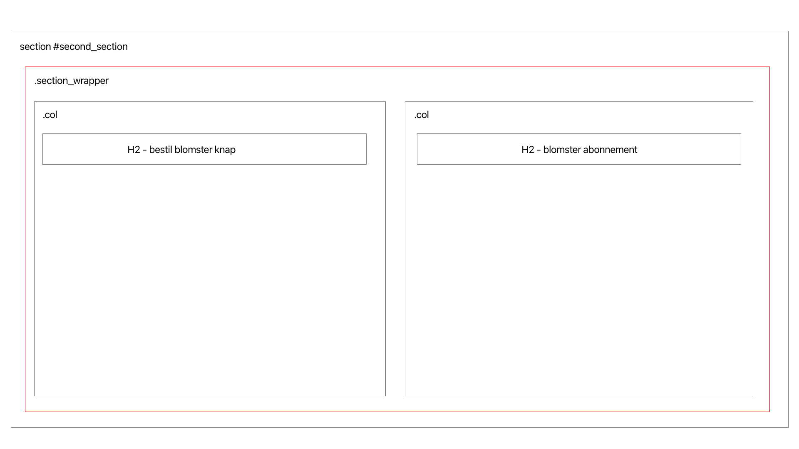
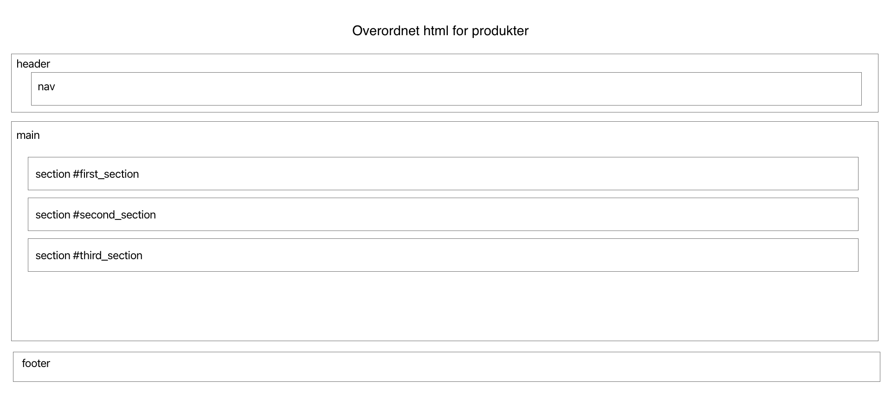
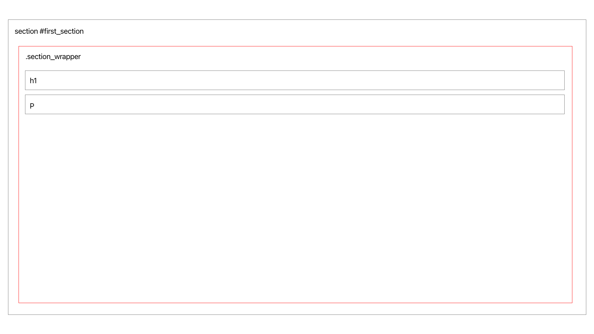
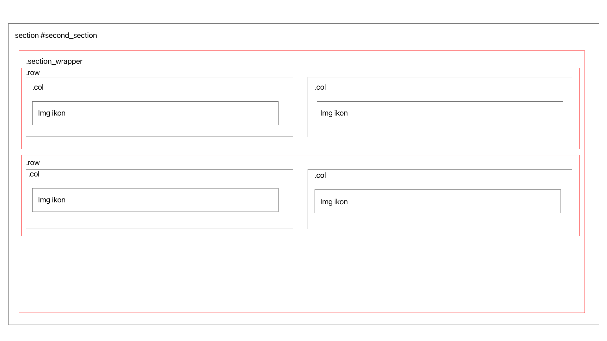
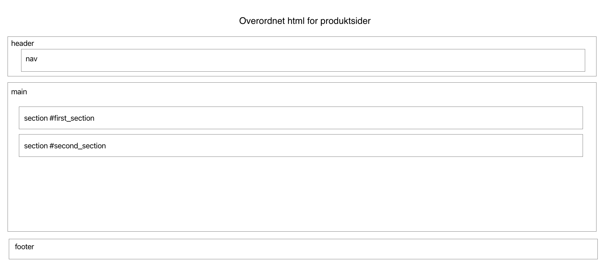
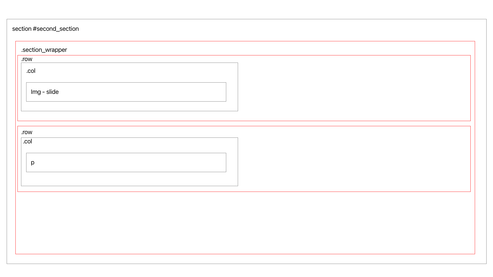
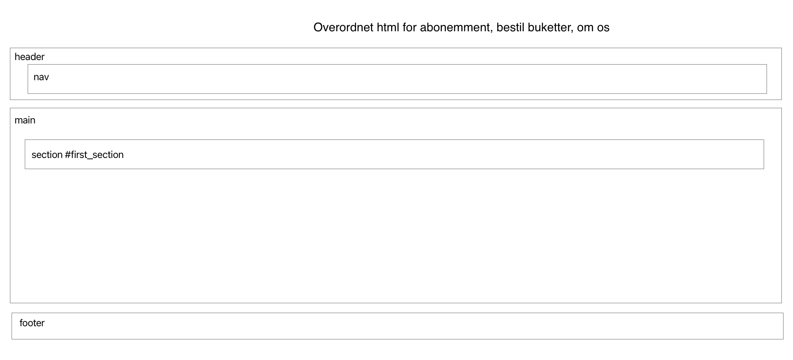
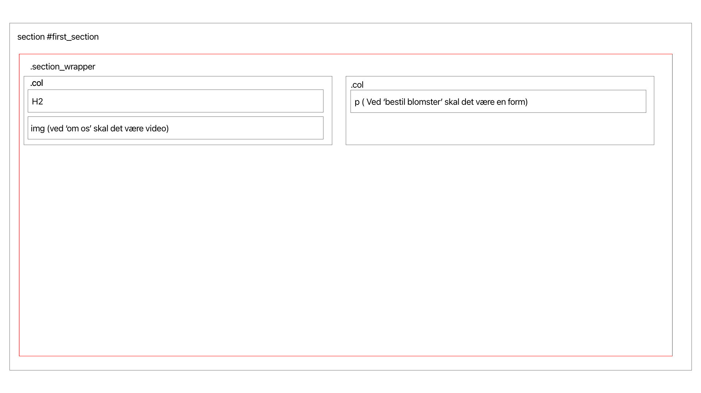